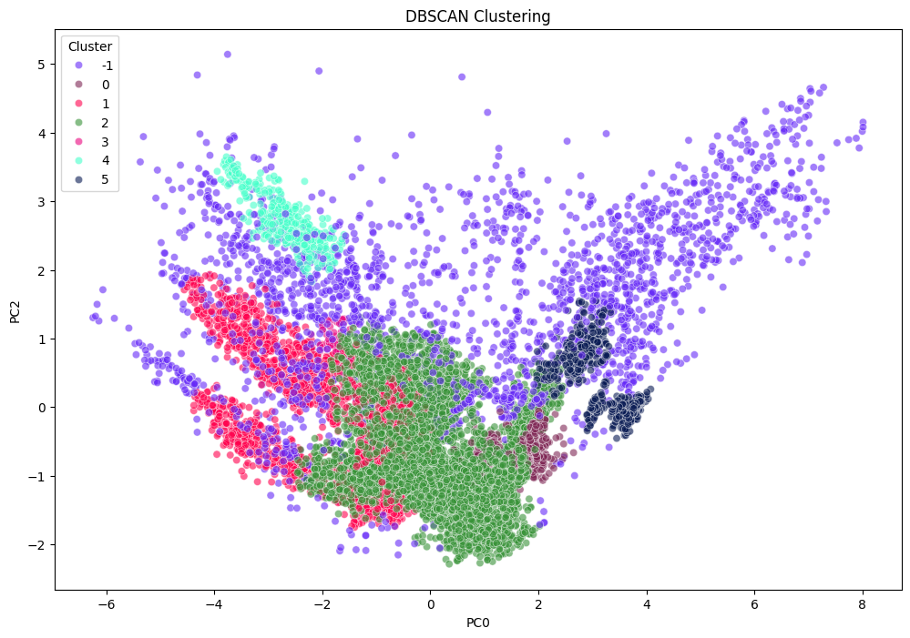
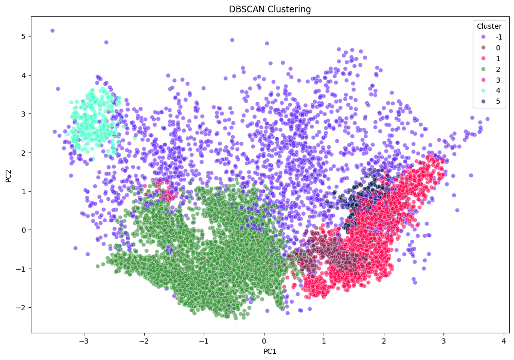
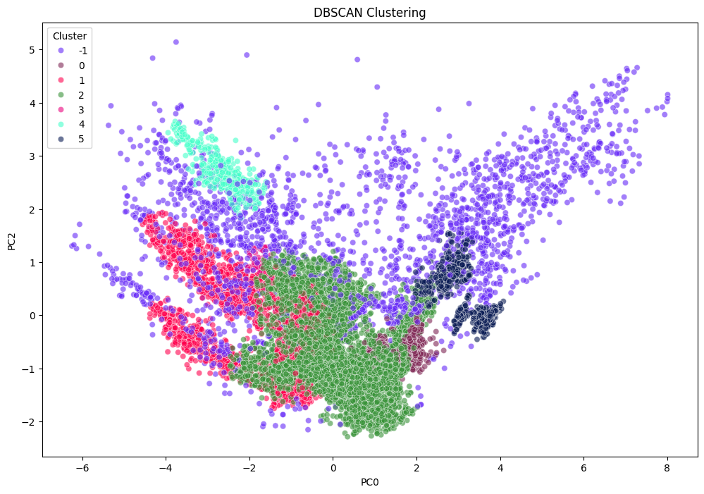
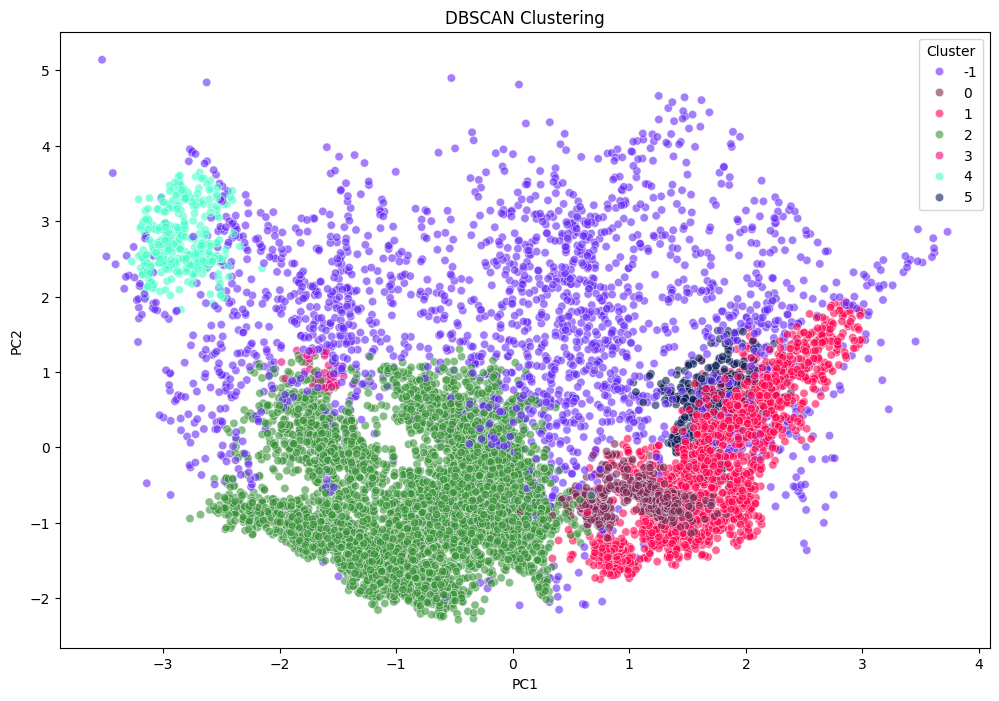

Clustering
Clustering is an unsupervised machine learning technique used to group similar data points into clusters based on their inherent patterns and similarities. It aims to discover natural structures in data without predefined labels, making it useful for tasks like customer segmentation, anomaly detection, and pattern recognition. General approaches to clustering include partition-based methods (e.g., K-Means), which divide data into a fixed number of clusters; hierarchical methods, which create nested groupings through iterative merging or splitting; density-based methods (e.g., DBSCAN), which identify clusters based on dense regions while ignoring noise; and model-based methods (e.g., Gaussian Mixture Models), which assume an underlying probabilistic distribution. The choice of method depends on the data’s structure, cluster shapes, and the need for scalability or robustness to noise.
Methods
Partition-Based Clustering (K-Means): K-Means is a widely used clustering algorithm that partitions data into k clusters by minimizing intra-cluster variance. It works iteratively by randomly initializing k centroids, assigning each data point to the nearest centroid, and updating the centroids based on the mean of assigned points until convergence. K-Means assumes that clusters are spherical and of roughly equal size, making it less effective for complex, irregularly shaped clusters. The algorithm requires the number of clusters to be predefined, which can be challenging if the optimal k is unknown. Despite its sensitivity to outliers and initial centroid placement, K-Means is computationally efficient, making it suitable for large datasets and applications like customer segmentation and image compression.
Hierarchical Clustering: Hierarchical clustering builds a hierarchy of nested clusters using either an agglomerative (bottom-up) or divisive (top-down) approach. In the agglomerative method, each data point starts as an individual cluster, and clusters are iteratively merged based on similarity until a single cluster remains. The divisive approach starts with all data points in one cluster and recursively splits them into smaller clusters. The results are visualized in a dendrogram, which helps determine the optimal number of clusters without explicitly setting k beforehand. Hierarchical clustering is effective for structured analysis but is computationally expensive, making it impractical for large datasets. Its sensitivity to the choice of linkage method (e.g., single, complete, or average) can affect cluster formation, sometimes leading to poor results when noise is present.
Density-Based Clustering (DBSCAN): DBSCAN identifies clusters based on data density, making it particularly useful for detecting arbitrarily shaped clusters and distinguishing noise. It groups data points that are closely packed together while treating sparsely distributed points as outliers. The algorithm relies on two parameters: ε (epsilon), which defines the neighborhood radius, and MinPts, the minimum number of points required to form a dense region. Unlike K-Means, DBSCAN does not require specifying the number of clusters in advance, and it can effectively separate clusters with varying densities. However, it may struggle with datasets where cluster densities vary significantly, as a single set of ε and MinPts values may not work well across the entire dataset. DBSCAN is widely used in applications such as anomaly detection, geographic data clustering, and noise filtering in large datasets.
Implementation
1. Data Preparation for Clustering
After data preprocessing process, we have a dataset which has been removed null values and cleaned outliers.
The dataset contains 17 features. The features are a mix of numerical and categorical variables.
External Links:

Histogram of all features after normalization.
2. K-Means Clustering


Visualization of K-Means Clustering (k=3,4,7). Click on the image to open expanded view mode.
3. Hierarchical Clustering

Dendrogram
4. Density-Based Clustering (DBSCAN)
 



2D Visualization of DBSCAN's results on different principal components.

3D Visualization of the result of DBSCAN Clustering